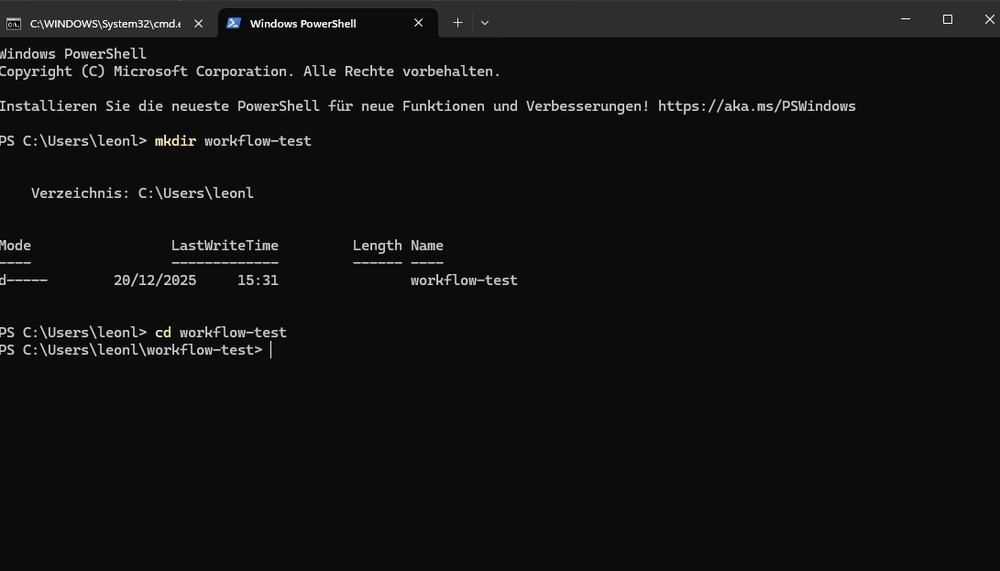
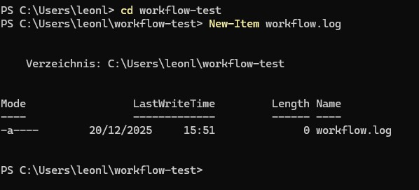
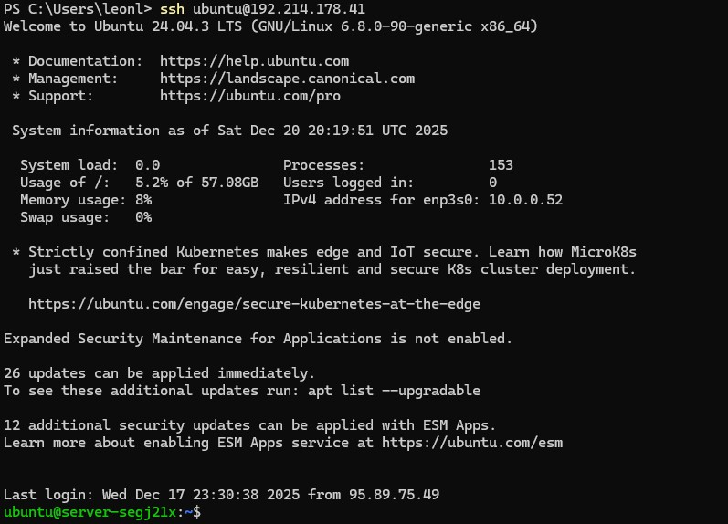
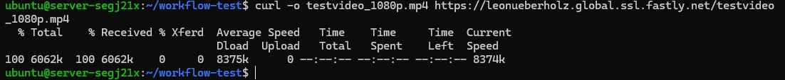
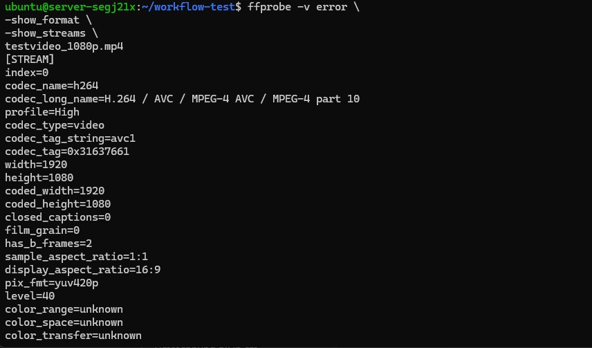
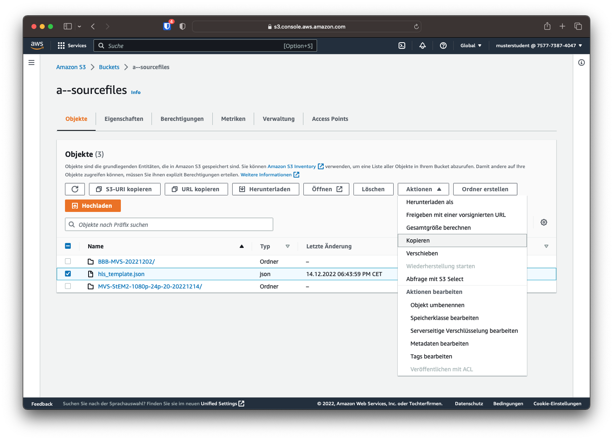
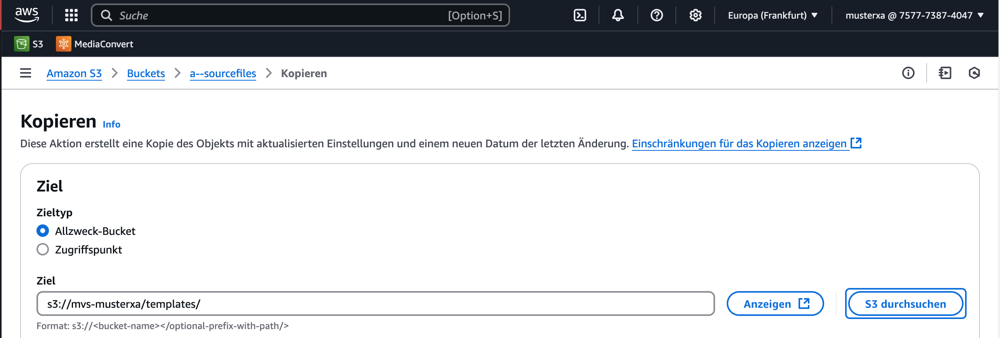

Mini-Test: Ingest → Analyse → CDN-Abruf
Kurzbriefing
Sie bauen in diesem Versuch einen kleinen, selbstgeschriebenen Workflow. Dieser überprüft automatisch, ob ein Video korrekt über ein CDN ausgeliefert wird und dokumentiert die wichtigsten technischen Informationen in einer Logdatei.
Voraussetzungen
-Eine transcodierte Videodatei liegt im STACKIT Object Storage (z. B. testvideo_1080p.mp4)
-Die Datei ist über Fastly erreichbar
(z. B. https://
-Zugriff auf: eine Linux-VM oder ein lokales System mit curl und ffmpeg/ffprobe
Ablaufplan zu dem Versuch
Die folgenden Schritte können entweder
lokal in der Windows PowerShell oder
auf der Linux-VM durchgeführt werden.
Für diesen Versuch wird empfohlen, die Schritte **lokal auszuführen**,
da kein Zugriff auf die VM erforderlich ist und alle benötigten Werkzeuge
(curl, ffprobe) lokal verfügbar sind.
Öffnen Sie Windows PowwerShell (lokal) Geben Sie folgendes in die PowerShell ein:
mkdir workflow-test
cd workflow-test
Dies sollte nun folgendermaßen ausshen:

Nun erstellen wir ein neues Item. Dieses nennen wir Workflow.log und wird folgendermaßen angelegt:
New-Item workflow.log

Geben Sie den folgenden Befehl ein:
$URL = "https://<DeineDomain>.global.ssl.fastly.net/testvideo_1080p.mp4"
Mit diesem Befehl wurde eine Variable in der PowerShell angelegt. Statt die vollständige URL bei jedem weiteren Befehl erneut eingeben zu müssen, kann sie nun wiederverwendet werden.
Nächster Schritt: CDN-Antwort abrufen Ziel dieses Schritts:
-prüfen ob die Datei erreichabr ist
-sehen, welches System antwortet (CDN)
-noch keine Datei herunterladen
Schritt 2: Header der CDN-Antowrt anzeigen
Führen Sie bitte jetzt genau diesen Befehl aus:
curl.exe -I $URL
Sie sollten jetzt eine Auflistung sehen:
Tragen Sie die die übergeben Prameter in eine Tabelle wie unten dargestellt ein:
| HTTP-Header / Feld | Bedeutung / Beobachtung (ausfüllen) |
|---|---|
| HTTP/1.1 200 OK | |
| Connection | |
| Content-Length | |
| Content-Type | |
| Server | |
| x-amz-request-id | |
| x-amz-id-2 | |
| x-ntap-sg-trace-id | |
| ETag | |
| x-amz-server-side-encryption | |
| Last-Modified | |
| Accept-Ranges | |
| Age | |
| Date | |
| Via | |
| X-Served-By | |
| X-Cache | |
| X-Cache-Hits | |
| X-Timer | |
| Strict-Transport-Security |
Nächster Schritt: Videodatei auf der VirutalMachien inspizieren
Schritt 1: Verbinden Sie sich bitte wieder mit der VM
ssh @Ubuntu<IpdesServers>

Erstellen Sie hier bitte ein neues Verzeichnis:
mkdir ~/workflow-test
cd ~/workflow-test
Laden Sie sich bitte in dieses Verzeichnis die transcodierten Videodateien herunter:
curl -o testvideo_1080p.mp4 https://<DeinDomainname>.global.ssl.fastly.net/testvideo_1080p.mp4
curl -o testvideo_720p.mp4 https://<DeinDomainname>.global.ssl.fastly.net/testvideo_720p.mp4
curl -o testvideo_460p.mp4 https://<DeinDomainname>.global.ssl.fastly.net/testvideo_460p.mp4
Sie sollten folgenden Ausgabe erhalten:

Nun überprüfen ob die Videodateien abgelegt wurden:
Als nächsten beschäftigen wir uns mit der ANalyse. Geben sie hierfür folgenden Command ein:
ffprobe -v error \
-show_format \
-show_streams \
testvideo_1080p.mp4
Dies sieht dann so aus:

Kopieren Sie sich die Ausgabe in ein separates Textdokument
Das gleiche bitte auch für die 720p Variante:
ffprobe -v error `
-show_format `
-show_streams `
testvideo_720p.mp4
Kopieren Sie sich die Ausgabe in ein separates Textdokument
Das gleiche wiederholen wir nun für die 460p Variante:
ffprobe -v error `
-show_format `
-show_streams `
testvideo_460p.mp4
Kopieren Sie sich die Ausgabe in ein separates Textdokument
Frage 3.1: Vergleich der Transcoding-Ergebnisse
Analysieren Sie die Ausgaben von ffprobe für die folgenden Dateien:
testvideo_1080p.mp4testvideo_720p.mp4testvideo_460p.mp4
Gehen Sie dabei insbesondere auf folgende Punkte ein:
- Welche technischen Parameter unterscheiden sich zwischen den Dateien?
- Welche Parameter sind bei allen Versionen identisch?
- Wie verändert sich die Bitrate im Verhältnis zur Auflösung?
- Welche Auswirkungen haben diese Unterschiede auf Bandbreite und Speicherbedarf?
Hinweis:
Nutzen Sie ausschließlich die mit ffprobe ermittelten Werte.
Eigene Annahmen ohne Messwerte sind kenntlich zu machen.

⬅️ Vorheriges Kapitel:
Einführung
➡️ Nächstes Kapitel:
CDN im Realbetrieb

Kontrollieren Sie, dass die Datei in das richtige Verzeichnis kopiert wurde.